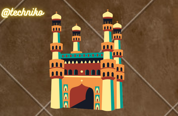

Hyderabad

A Word About The Hyderabad District:
Hyderabad (Urban) District in its present shape has come into existence in August, 1978 consequent on formation of a new District, Ranga Reddy from the erstwhile Hyderabad District. All the rural areas of erst-while Hyderabad District have been included in Ranga Reddy District, while thearea of Muncipal Corporation of Hyderabad (Exclding a small part), Secunderabad Cantonment, Lalaguda and Osmania University are included in Hyderabad District. There are 64 villages in the District and they are grouped into erstwhile talukas, Viz., Charminar, Golconda, Musheerabad and Secunderabad.
Hyderabad is the capital of one of the most techno savvy state in India,Telangana. The previous name of this city was Bagyanagaram.This city is also called the ‘city of pearls’ because of the major dealing of pearls that is done from this part of the state. Hyderabad was founded in 1591 and planned as a grid with the Charminar at its centre. It has now grown well beyond the confines of the original walled city,to include a new town north of the Musi river, the Military Cantonment at Secunderabad and a burgeoning high-tech Estate, nicknamed “Cyberabad”.
The State capital being in this District, it is highly developed in all aspects. With a view to bringing up the administration to the door steps of the people to solve their problems upliftment of the people, the Government as a policy took a decision to restructure the Lower level administrative set-up in the state consequently, Revenue Mandal were setup.
Hyderabad District is a city-district in the state of Telangana which includes a part of the metropolitan capital city area of Hyderabad. It is the smallest in terms of area, among all the districts in the state, but has the highest human density.
Old MCH area, which forms the central region of Hyderabad city falls under this district. Hyderabad district was formed initially in the year 1948 followed by Police Action by merging the Atraf-a-Balda District and Baghat Districts. In the year 1978, Hyderabad district was later split into Hyderabad Urban District and Hyderabad Rural. Currently, Hyderabad Urban district is known as the Hyderabad district.
Hyderabad district occupies an area of approximately 217 square kilometers. According to the 2011 census the population of this district was 3,943,323. Hyderabad is known as the City of Pearls, as it had once flourished as a global center for trade of rare diamonds, emeralds as well as natural pearls.
Mecca Masjid, Charminar, Golconda fort, QutubShahi tombs, Paigah tombs are some of the historic structures. There are many other structures like Falaknuma Palace, Chowmohalla Palace, TaramatiBaradari etc., which are quite famous attracting tourists from all over. Birla Mandir, Jagannath temple, Salarjung Museum, Mahankali temple, Hussain Sagar lake, Mir Alam Tank, Nehru Zoological park, KBR park , Mrugavani National Park, are some of the other major tourist attractions.
Geography:
Area: 217 Sq Km.
Altitude: 536 Meters.
Climate: Tropical Wet and Dry.
Summer: Max 40 C and Min 22 C.
Winter: Max 22C and Min 13.8C.
Rainfall: 89cm (June to Sept).
Best Season: June to February .
STD Code: 040
State: Telangana.
Currency: The unit of currency in Hyderabad is the ‘Rupee’.
Attractions: Char Minar, Golconda Fort, Qutbshahi Tomb, Mecca Masjid, Osmania University and HITEC City.
Languages Spoken: Urdu, Hindi, Telugu and English.
Tipping: Tipping is usually 10% to 15% of the charge.
Airport: The airport at Shamshabad, 22Km south of the Hyderabad city.
Electricity: 220v, 50Hz.
Religion: About 50% of the population consists of Muslims; there are Hindus and Sikhs also.
Exports: Software, Basmati rice and spices, medical transcription and oil exports.
Industries: Electrical fans, cooling systems, software industries, jewelers, pharmaceuticals and automotive industries.